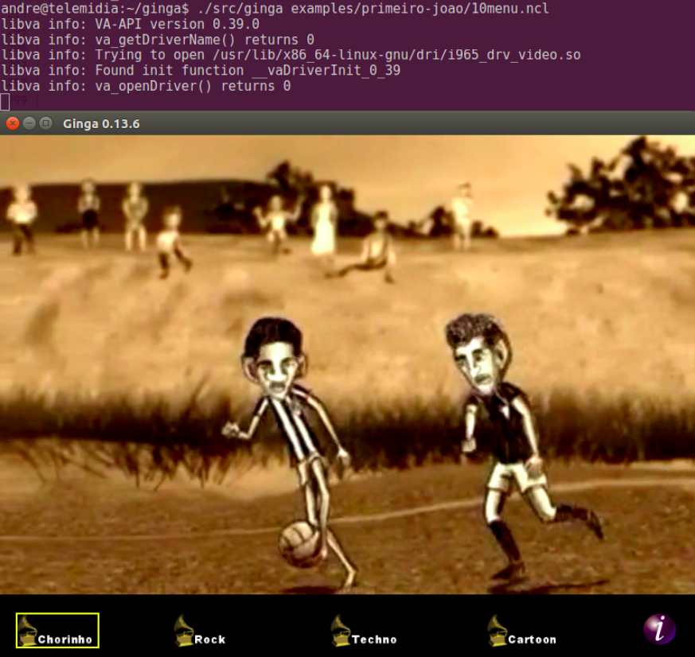

Ginga NCL
A middleware of the Japanese-Brazilian Digital TV System
Ginga® is the middleware of the Japanese-Brazilian Digital TV System (ISDB-TB) and ITU-T Recommendation for IPTV services. Ginga-NCL Presentation Environment is the required logical subsystem of Ginga, responsible for running NCL applications. NCL is an XML application language that provides support for specifying spatio-temporal synchronization among media objects, media content and presentation alternatives, exhibition on multiple devices, and live producing of interactive non-linear programs.
In this project, I worked mainly on the rebuilding of video player used by Ginga. This new video player was developed using C++, GStreamer to decode audio and video, and Cairo to 2D rendering. Moreover, some audio and video properties described on NCL were enabled (e.g., balanceLevel, trebleLevel, bassLevel, freeze). Figure below presents Ginga playing an application.
Ginga-NCL was developed and is maintained by TeleMidia Lab. at PUC-Rio.
- Site: http://ginga.org.br
- Repository: GitHub